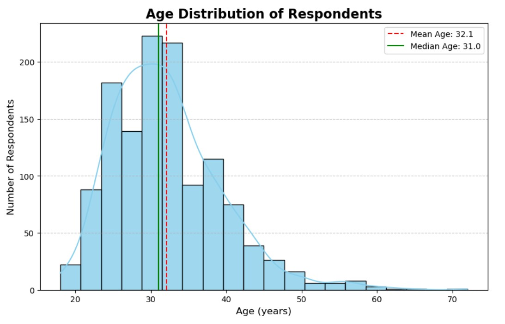
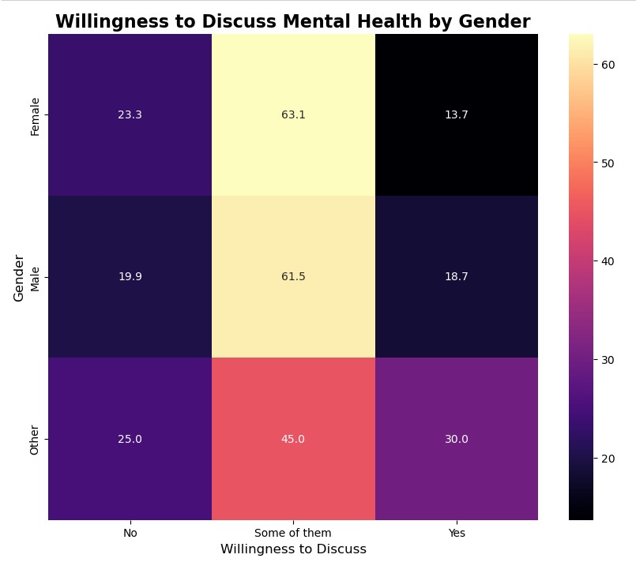
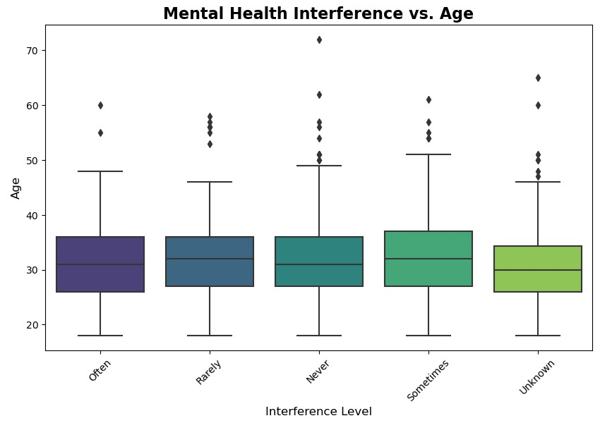
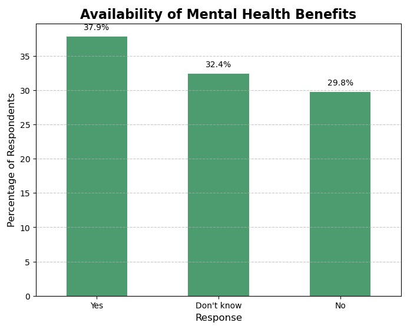
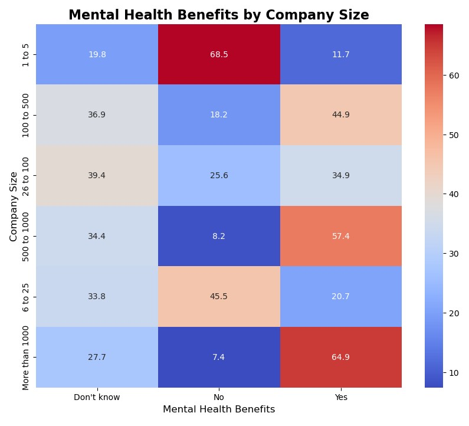
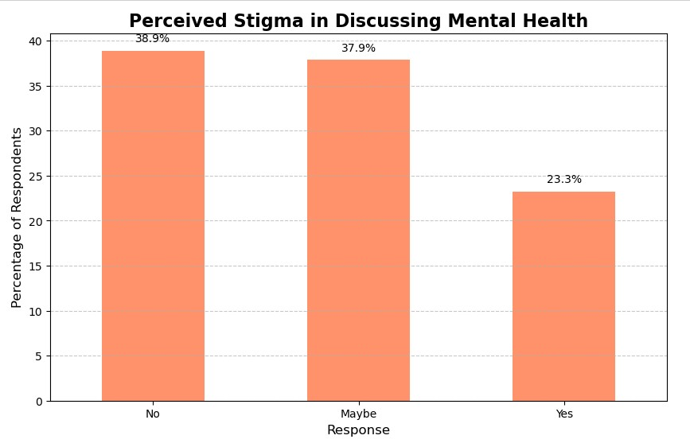
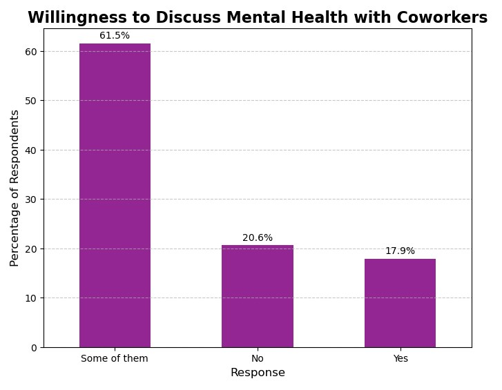

Mental Health in the Workplace: An Analytical Deep Dive
Exploring mental health trends, workplace policies, and their impact on employees.
📌 Introduction
Workplace mental health is a crucial factor influencing employee well-being, productivity, and retention. However, many companies still fail to provide the necessary support. Using data from the OSMI Mental Health in Tech Survey, this project uncovers key insights into workplace mental health trends, company policies, and employee experiences.
🎯 Key Objectives
- Identify workplace factors impacting employee mental health.
- Examine correlations between age, gender, and mental health struggles.
- Provide actionable insights for companies to foster a healthier work environment.
🛠 Data Overview & Cleaning
The dataset consists of 1260 from professionals worldwide. To ensure accurate analysis, we:
- Standardized gender responses (e.g., "male", "M", "Man" → "Male").
- Handled missing data through imputation and categorical grouping.
- Transformed variables (e.g., company size ranges: "1-10" → "1 to 10").
📊 Exploratory Data Analysis (EDA) & Findings
1️⃣ How Age and Gender Affect Mental Health
Age Distribution: The median age of respondents is 31 years, with younger employees reporting higher interference levels.
Gender & Age vs Willingness to Discuss Mental Health:
 - 📉It can be inferred that willingness to discuss mental health does not depend on the gender and age of the person
2️⃣ Employer Support & Mental Health Benefits
Availability of Mental Health Benefits:
 - 📊 62% of respondents indicate that mental health benefits are either not provided by their employer or they don't know about it.
- 🏢 Larger companies (>500 employees) provide more health benefits as they often have more resources to offer benefits.
- 📊 Smaller organizations struggle to provide adequate support.
Are the Mental Health Programs actually effective?:
- ⚠️ From the first graph, 66.9% of employers have not incorporated mental health discussions into wellness programs
- 📉 From the second graph, we can see that 17.8% employees find it difficult and 44.8% don't know if it would be easy for them to take leave for mental health conditions.
3️⃣ Workplace Stigma & Employee Willingness to Speak Up
Perceived Stigma and Willingness in Discussing Mental Health:
 - ⚠️ From the first graph, we can see that only 38.9% of employees believe discussing mental health could not harm their careers. Rest either believe that it can harm their careers or they are unsure about it.
- 📉 From the second graph, we can see that 65% of respondents discuss mental health with only some of their coworkers assuming that they have developed close friendship with them. But they are hesitant to discuss mental health with everyone.
✅ Conclusion & Recommendations
- Employees in small companies report higher workplace mental health struggles due to lack of programs.
- Mental health benefits alone are not enough—reducing stigma is critical.
- Companies should implement clearer mental health policies, flexible leave options, and employee support programs to maintain a healthy work environment.
Final Thought: This analysis provides data-backed insights to help companies create healthier work environments.
📜 Want to See the Full Project?
Check out the complete project notebook with code and visualizations.
View Full Project